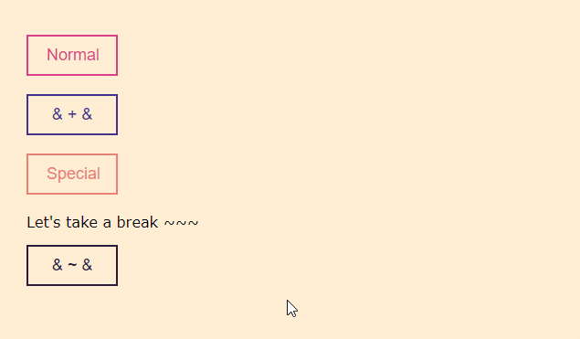
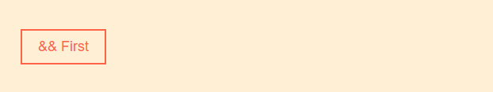
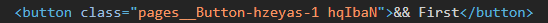
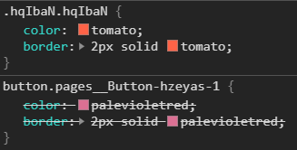
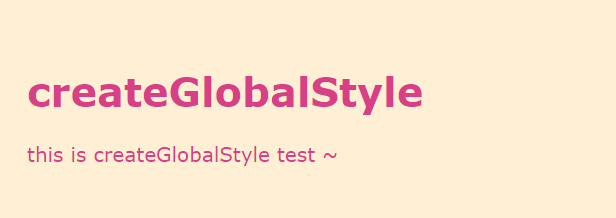

Part 4 - Coming from CSS, SCSS
1.Pseudoelements, Pseudoselectors, and Nesting

const Button = styled.button.attrs((props) => ({
colors: ['#d83f87', '#2a1b3d', '#44318d', '#e98074']
}))`
display: block;
width: 100px;
margin-bottom: 20px;
border: none;
background-color: transparent;
padding: 10px 20px;
border: 2px solid ${(props) => props.colors[0]};
color: ${(props) => props.colors[0]};
transition: .3s;
font-size: 18px;
cursor: pointer;
&:hover {
background-color: ${(props) => props.colors[0]};
color: #fff;
}
& ~ & {
border-color: ${(props) => props.colors[1]};
color: ${(props) => props.colors[1]};
&:hover {
background-color: ${(props) => props.colors[1]};
color: #fff;
}
}
& + & {
border-color: ${(props) => props.colors[2]};
color: ${(props) => props.colors[2]};
&:hover {
background-color: ${(props) => props.colors[2]};
color: #fff;
}
}
&.special {
border-color: ${(props) => props.colors[3]};
color: ${(props) => props.colors[3]};
&:hover {
background-color: ${(props) => props.colors[3]};
color: #fff;
}
}
`;
在 Styled Component 中，也可以像 SCSS
- 以 nesting 的方式寫入，
- 可以與偽類 (psuedoclass) 或偽元素 (psuedoelement) 結合使用
- 以 & 符號表示當前的元素
- 選擇器 ( +, ~, etc) 的使用
< 小技巧 >
使用雙 & 符號可以增加 CSS 上的優先權

const Button = styled.button`
padding: 10px 20px;
background-color: transparent;
margin-right: 20px;
font-size: 18px;
&& {
color: tomato;
border: 2px solid tomato;
}
`;
const GlobalStyle = createGlobalStyle`
button${Button} {
color: palevioletred;
border: 2px solid palevioletred;
}
`;


&& 會以兩個相同的 class 提高優先權，蓋過先前的 CSS
2.Define Styled Components outside of the render method
定義 Styled Component 時，記得寫在 Component 之外,
例如
const StyledButton = styled.button`
/* ... */
`;
const HomePage = ({ }) => {
return <StyledButton>Button</StyledButton>;
}
而不要
const HomePage = ({ }) => {
const StyledButton = styled.button`
/* ... */
`;
return <StyledButton>Button</StyledButton>;
}
若定義在裡面的話，在每次 render 時，Styled Componet 每次都會重新被宣告一次,
不但會引響 render 的速度，也會容易有 cache 的情況產生
3. createGlobalStyle
在 Styled Component 中，也可以寫入共用的 Style

import styled, { createGlobalStyle } from 'styled-components';
const GlobalStyle = createGlobalStyle`
body {
color: #d83f87;
font-family: verdana;
font-size: 20px;
}
`;
const Title = styled.h1``;
const Paragraph = styled.p``;
在上述的範例中，Title 和 Paragraph 內部皆沒有定義 CSS，
吃的都是從 GlobalStyle 繼承過來的 CSS
4. Fonts Importing
import styled, { createGlobalStyle } from 'styled-components';
const GlobalStyle = createGlobalStyle`
@font-face {
font-family: 'Noto Sans TC';
src: url('/fonts/NotoSansTC-Regular.otf');
font-style: normal;
font-weight: 400;
font-display: fallback;
}
body {
font-family: 'Noto Sans TC', sans-serif;
}
`;
可在 globalStyle 的地方加入 font-face 引入外部字元
5.Animations
const rotate = keyframes`
0% {
transform: rotate(0deg);
}
100% {
transform: rotate(360deg);
}
`;
const RotatingCapoo = styled.img`
width: 150px;
heigth: 150px;
animation: ${rotate} 5s infinite linear;
`;
return (
<RotatingCapoo src="https://sdl-stickershop.line.naver.jp/stickershop/v1/sticker/58661700/android/sticker.png" />
);
在 Styled Component CSS animation 上也可以使用